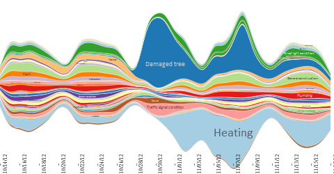

The following images were produced by the algorithms discussed in the submitted paper.
Clicking on a figure opens a high-resolution version in SVG format, which can be displayed and zoomed in the web browser.
In creating the figures we discarded labels of very thin layers that were too small to be read at screen size. However, passing with the pointer over a layer in a SVG figure reveals the layer label.
A compressed version of this website can be downloaded for navigating it locally.
| Ordering: TwoOpt. Baseline: 1-norm |
Ordering: TwoOpt. Baseline: 2-norm |
| Ordering: TwoOptR. Baseline: 1-norm |
Ordering: TwoOptR. Baseline: 2-norm |
| Ordering: BestFirst. Baseline: 1-norm |
Ordering: BestFirst. Baseline: 2-norm |
| Ordering: OnSet. Baseline: 1-norm |
Ordering: OnSet. Baseline: 2-norm |
| Ordering: D3. Baseline: 1-norm  |
Ordering: D3. Baseline: 2-norm |
| Ordering: Random. Baseline: 1-norm |
Ordering: Random. Baseline: 2-norm |